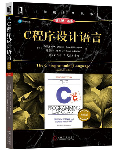
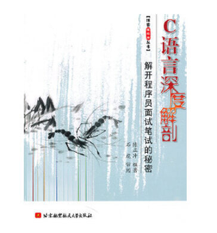

1. 前言¶
欢迎大家参加学习本教程。
先跟大家说明做本教程的原因。
目前在网络上，基于STM32的学习教程非常丰富，也非常好。
那为什么还要浪费时间再做一个教程呢？
如果熟悉这些教程的朋友应该了解，这些教程对于入门了解概念，非常合适。
比如，我们要使用一个新外设，根本不知道这个外设是怎么工作的。通过网络上的这些教程，可以快速学会如何使用这个设备。
但是这些教程基本都有一个缺点：没有考虑实际项目工程开发的软件设计！
很多教程，只是官方例程的补充说明。没有考虑软件工程的事、没有考虑系统流程、没有考虑模块化设计、没有考虑接口设计、没有考虑分层设计。
基于这样的考虑，我设计了一套精巧的STM32F407开发板。这个开发板的外设、接口，都是基于上述问题设计：如何模块化、如何设计接口、如何设计软件分层。
在这套硬件上，最后形成了一个可复用的模块：PetiteDrv。
但是这套软件对于入门者非常不友善。因此决定再设计一个入门的开发板，做一些必要的入门教学。
目的是引导大家走向更专业的软件开发。
因此开发板的性价比极高，整体的设计也非常适合自学和实验室做实验。
编写的入门文档，有以下特点：
1 根据开发板，做25个教程。只为引导入门，更多的教程大家可以从其他地方学习。
2 从实用的目的，用实用的方法，教大家如何进行嵌入式开发，不照本宣科。
3 只挑有用的知识点讲解，不做大而全。没有几千页，只有几十页。因此很多知识点并不会涉及。
4 在讲入门知识之外，同时讲一些软件工程问题，引导大家软件设计意识。
1.1. 学习说明¶
要不要学51
不是必须，学过当然好，有基础，入门更快。
要不要学汇编
不是必须，学过当然后，如果有汇编知识，说明你对芯片底层的操作更加清楚。当遇到一些疑难问题时，你考虑问题就更加全面，也就更容易解决问题。
基础要求
那0基础也能学吗？
我不敢说学不会，但是建议最好有以下基础：
模电：你总要知道电源、电压、电流、电阻，这些概念吧。
数电：清楚1和0是啥、清楚一些常用的逻辑器件、清楚一些常规逻辑操作（与或非等）
C语言：程序使用C语言编写。
在<W108_F103_Tech\ref\0 C语言>目录中有一些我收集的C语言资料
C语言推荐下面这本书：

C语言进阶可读下面这本

1.2. 教程说明¶
本教程分两部分
base
Advanced
当前教程如下：
| 名称 | 说明 | 名称 | 说明 | ||
|---|---|---|---|---|---|
| 00 | 前言 | 介绍本教程 | 13 | PWM蜂鸣器 | 简单PWM使用，驱动蜂鸣器 |
| 01 | 资料介绍 | 说明教程资料都有些什么内容 | 14 | 串口与调试信息 | 串口的概念，如何使用串口输出调试信息 |
| 02 | 最小系统说明 | 介绍单片机最小系统的组成 | 15 | ADC | 模拟电压转换为数字 |
| 03 | 建立工程 | 教大家如何用MDK建立一个项目工程 | 16 | DAC | 数字转换为模拟量 |
| 04 | 点亮LED | 点亮LED，实现流水灯 | 17 | RTC | RTC初始化和基本应用 |
| 05 | 开发工具 | 介绍可提高效率的开发工具： Source Insight 4.0 Beyond compare git |
18 | I2C EEPROM | 学习I2C通信，学习EEPROM的使用。 |
| 06 | 点亮数码管 | 使用一位8段数码管显示数字 | 19 | SPI FLASH | 学习SPI 通信，学习SPI FLASH的特点和基本操作。 |
| 07 | 程序各种要素 | 一个程序有多少东西：变量、函数、流程、宏定义、堆和栈、库函数 | 20 | I2C OLED | 学习显示屏的一些基本概念，使用I2C接口控制OLED |
| 08 | 动态扫描数码管 | 使用动态扫描方法在8位数码管上显示数字。 | 21 | SPI COG | 使用SPI口控制COG LCD |
| 09 | 源码结构整理 | 一个工程的源文件如何管理？ | 22 | FSMC TFT | 使用FSMC控制TFT LCD |
| 10 | 按键扫描 | 如何检测按键？如何防抖？ | 23 | VSPI Tslib TP | 用IO口模拟SPI控制触摸芯片，使用Tslib库进行触摸屏校准。 |
| 11 | 外部中断 | 中断的原理，外部中断的使用 | 24 | SDIO | 学习如何从官方库移植代码 |
| 12 | 定时器 | 定时器的使用 | 25 | USB |
提高教程
| 名称 | 说明 | 名称 | 说明 | ||
|---|---|---|---|---|---|
| 1 | 串口中断和环形缓冲 | 学习环形缓冲，学习前后台程序的设计，学习数据分层的概念 | 2 | 矩阵按键扫描 | 学习如何扫描矩阵按键，学习软件接口设计和数据分层理念，学习模块化设计 |
20200109
END